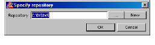
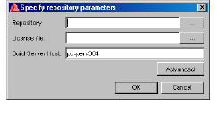
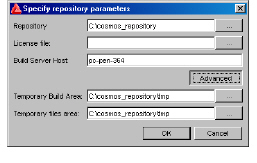
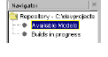

To create an information model repository in the graphical user interface
1 Select File > Change Repository.
The Specify repository dialog box appears.
Note: If you already created a repository, the last opened repository appears in the Repository field.

2 Click New.
The Specify repository parameters dialog box appears.

3 Next to the Repository field, do one of the following:
• Type the path of an existing directory that you want to specify as your new repository.
• Click the browse button (...) to select or create a directory.
4 In the License file field, do one of the following:
• Type your license file information, for example, <PortNumber>@<LicenseServerHostname>.
• Click the browse button (...) to select the license file.
5 The Build Server Host field specifies the host name of the Submission Check server. By default, the Build Server Host field displays the name of the machine that the selected repository resides on. For more information on configuring Submission Check, see Submission Check.
To specify a different build server host, type the name of the machine.
6 To display additional repository information, click Advanced.
Two more fields appear in the Specify repository parameters dialog box.

By default, the Temporary Build Area and Temporary files area fields display the root path of the selected repository with an appended
/tmp directory.
7 The Temporary Build Area field specifies the writable directory where local builds are created during the model build process.
To choose a different temporary build area, do one of the following in the Temporary Build Area field:
• Type the path of an existing directory that you want to specify as your temporary build area.
• Click the browse button (...) to select or create a temporary build area directory.
8 The Temporary Files area field specifies the writable directory for the model browser’s temporary files.
To choose a different temporary files area, do one of the following in the Temporary files area field:
• Type the path of an existing directory that you want to specify as your temporary files area.
• Click the browse button (...) to select or create a temporary files area directory.
9 Click OK.
The new repository appears in the Navigator panel.
